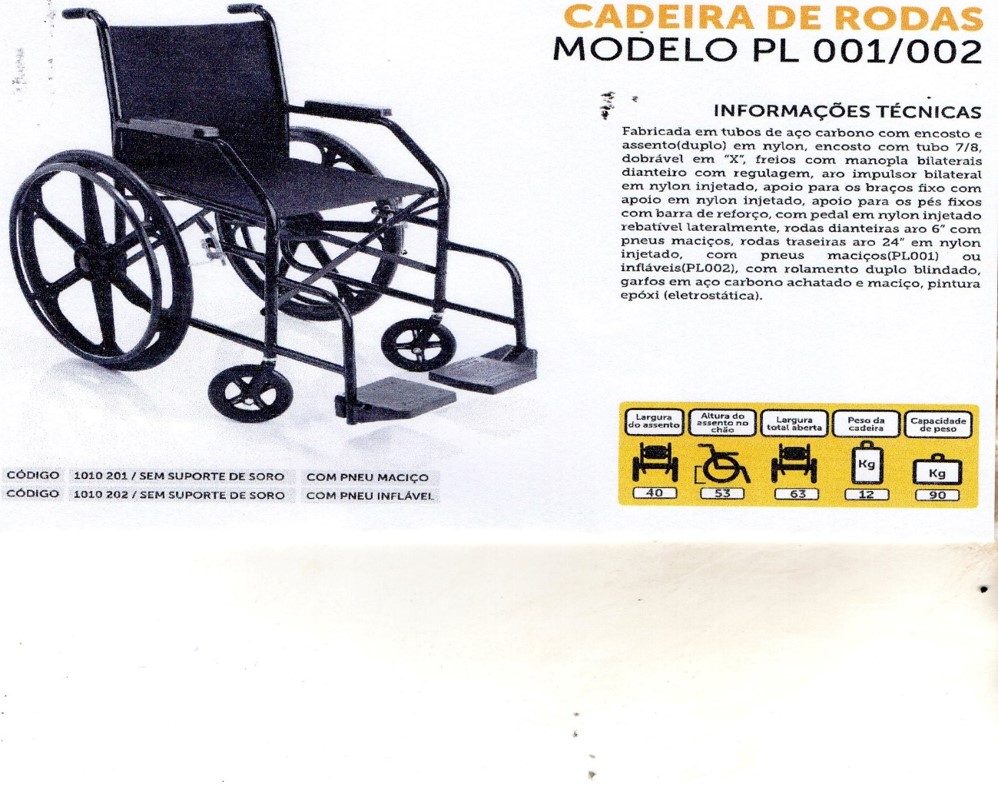
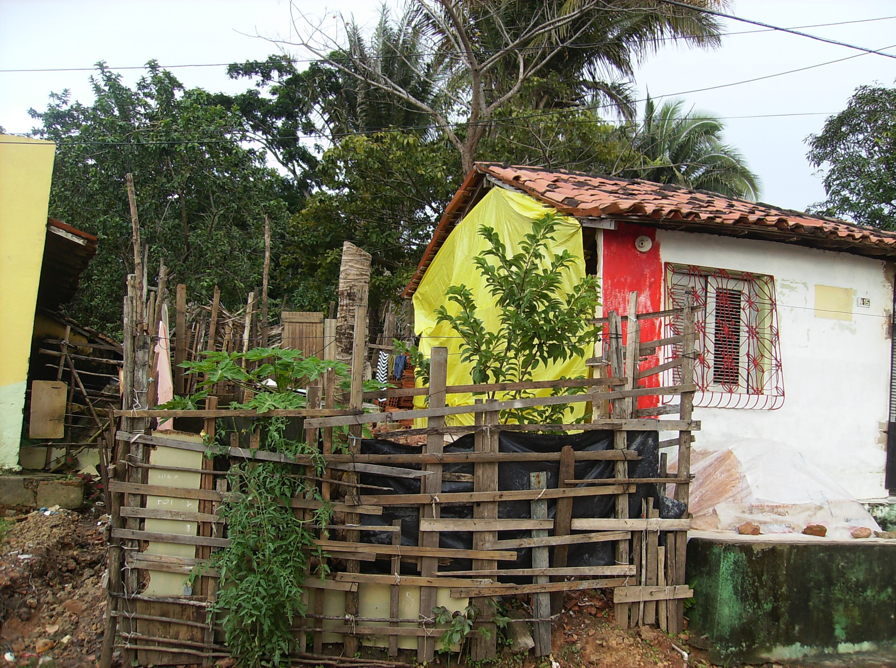
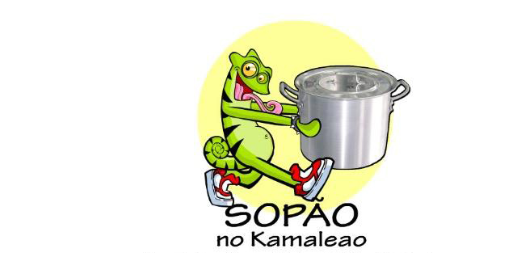

Parte do projeto EU PRECISO DE DEUS teve o objetivo de entregar 25 cadeiras de rodas manuais, doadas pelo empresário Edison Lobão Filho, que em atitude de Ação de Graças ao que Deus fez na vida dele através de Jesus Cristo, manifestou o desejo de ajudar pessoas que estevam necessitando desse apoio. Essa ação ocorreu em parceria com a Igreja Batista do Angelim(Pr. Joaquim), que através do seu ministério fez o cadastro dos cadeirantes carentes e organizou a entrega das referidas cadeiras, que aconteceu em culto previamente organizado. As etapas se deram prevendo: divulgação em mídia social, cadastro dos cadeirantes, triagem das reais necessidades e entrega em culto no dia 19 de Maio de 2019.
Esta ação ocorreu em 2012 e teve o objetivo de ajudar com materiais de construção para reformar a casa de D. Dada e Sr. Carlinhos, ele aposentado e ela desempregada(lava roupa pra fora), e hoje vivem dentro de uma casa, localizada no bairro: PÃO DE AÇÚCAR, que na época estava caindo aos pedaços devido às constantes chuvas, veio a desabar uma parede e estava ameaçada a desabar por inteiro, sobrevivendo sem segurança, infra-estrutura, correndo até mesmo risco de vida, uma vez que não podiam desistir da casa porque não tinham para onde ir. Essa ação foi realizada por voluntários que arrecadaram alguns materiais de construção (uma carrada de areia, uma pia para cozinha, lavanderia, milheiros de tijolos e um box de vidro) e valores para ajudar na mão de obra com o pedreiro e dois ajudantes. As etapas se deram prevendo: aquisição de material, inicio do trabalho por parte do pedreiro, e o tempo estimado para a conclusão da obra. O casal ficou responsável pela execução da obra com o material recebido do projeto EU PRECISO DE DEUS.
Foi realizado no dia 15 de Janeiro de 2011 no espaço Kamaleão e reuniu um grande número de pessoas sendo 660 pessoas ao todo, (Vila Cafeiteira - 175, Vila Lobão - 243, Barreto - 131, Alemanha - 111) , para um culto realizado ao Senhor Jesus em parceria com Igreja PLENITUDE DE VIDA (Pr. Berg), onde foi entregue pão e sopa, sendo que na entrada cada um recebeu uma senha que teve direito de participar de sorteios e prêmios. A noite para finalizar a programação, houve a apresentação de um grupo gospel e animação do mascote do Kamaleão. Essa foi a primeira ação social direcionada por Deus à Danny Siqueira que é a idealizadora do projeto EU PRECISO DE DEUS.
